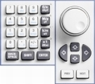

This section describes how to access input fields, enter numeric values or character data, and toggle checkboxes. For this purpose, use the ON | OFF key and the front panel keys shown below.

| ► | Use either the rotary knob or the ARROW keys below the knob to step through the elements in the dialog.
|
| ► | Use the PREV / NEXT keys to switch to the previous tab to the left or to the next tab to the right. |
To activate the pull-down list, press the rotary knob. Alternatively, press ENTER.
To step through the list, turn the rotary knob clockwise or counterclockwise. Alternatively, use the UP / DOWN ARROW keys.
To select the current entry, press the rotary knob. Alternatively, press ENTER.
The pull-down list is deactivated.
To activate the input field, press the rotary knob. Alternatively, press ENTER.
- Enter/modify the number:
- Use the keys 0 to 9 to enter these digits.
- Use the UP / DOWN ARROW keys to increment/decrement a digit.
- Use the LEFT / RIGHT ARROW keys to move the cursor within the input field.
- Use the dot key to enter a decimal point.
- Use the plus/minus key to change the sign of the number.
- Press the G/n, M/m, k/m and x1 keys to multiply the entered value with factors of 10(-)9, 10(-)6, 10(-)3 or 1 and to add the appropriate physical unit.
- In hexadecimal input fields, use the unit keys, the dot key and the plus/minus key to enter the digits A to F.
- Press BACKSPACE to correct an entry.
Press ENTER or the rotary knob to confirm the number and deactivate the input field.
To activate the input field, press the rotary knob. Alternatively, press ENTER.
- Enter/modify characters:
- Press 0 to 9 repeatedly to enter one of the characters assigned to the key.
- Press the dot key repeatedly to enter one of the special characters assigned to the key.
- Press plus/minus to switch between upper and lower case.
- Use the LEFT / RIGHT ARROW keys to move the cursor within the input field.
- Press BACKSPACE to correct an entry.
Press ENTER or the rotary knob to confirm the character sequence and deactivate the input field.
Two types of checkboxes must be distinguished. There are standalone checkboxes and checkboxes combined with a data input field.
To select or clear a combined checkbox:
Press ENTER or the rotary knob to activate the data input field.
Press ON | OFF to select or clear the checkbox.
To select or clear a standalone checkbox, press ENTER or the rotary knob.